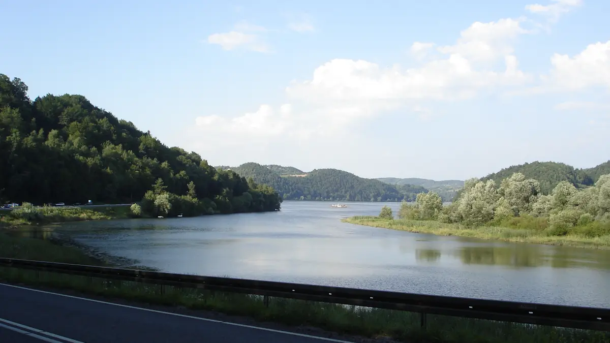
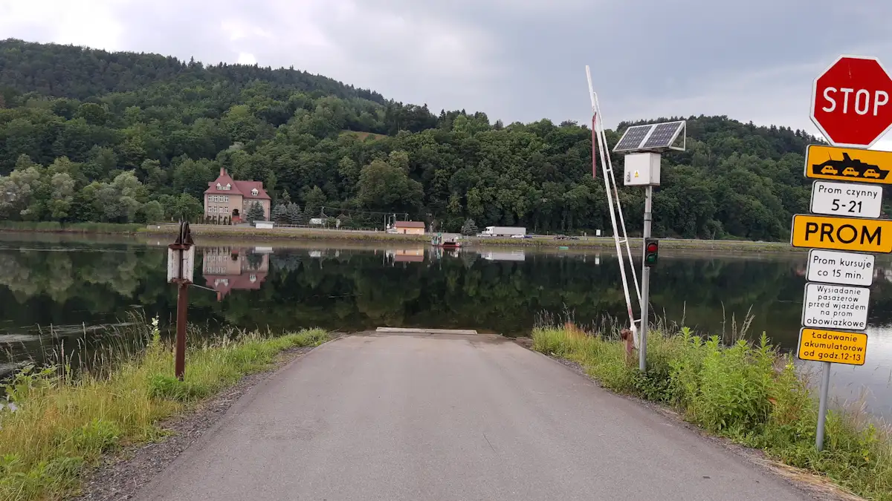
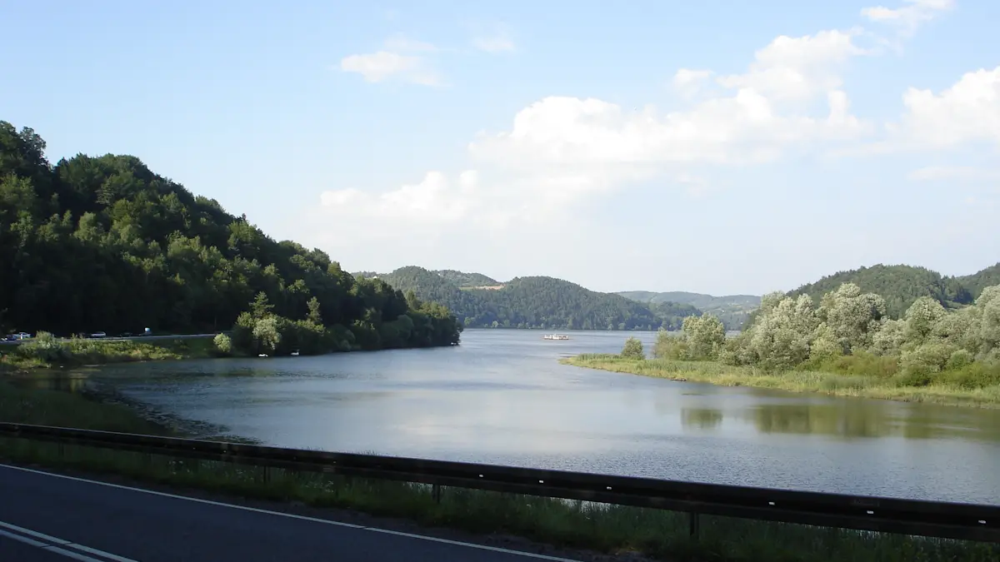
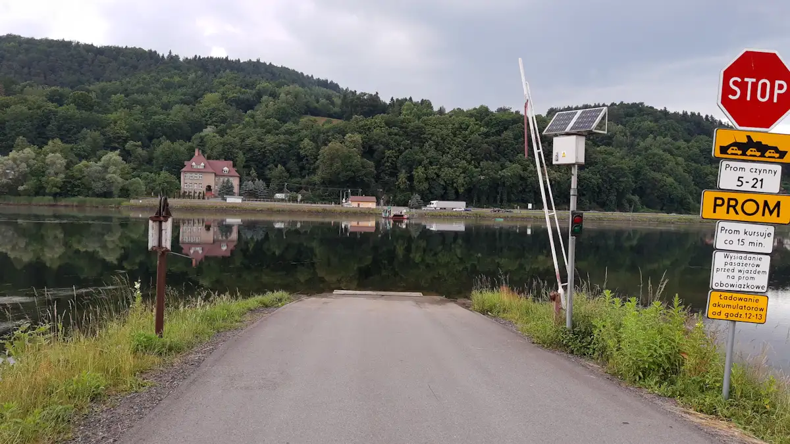

Przeprawa promowa przez Jezioro Czchowskie pomiędzy Wytrzyszczką
a Tropiem, powstała po II Wojnie Światowej, w miejsce
wysadzonego przez wycofujących się Niemców mostu. Dość uciążliwa dla
mieszkańców - dla turystów jest niemałą atrakcją. Prom kursuje przez
cały rok w godzinach 5.00 - 21.00, z przerwą od 12.00 do 13.00
i jest darmowy.
 


